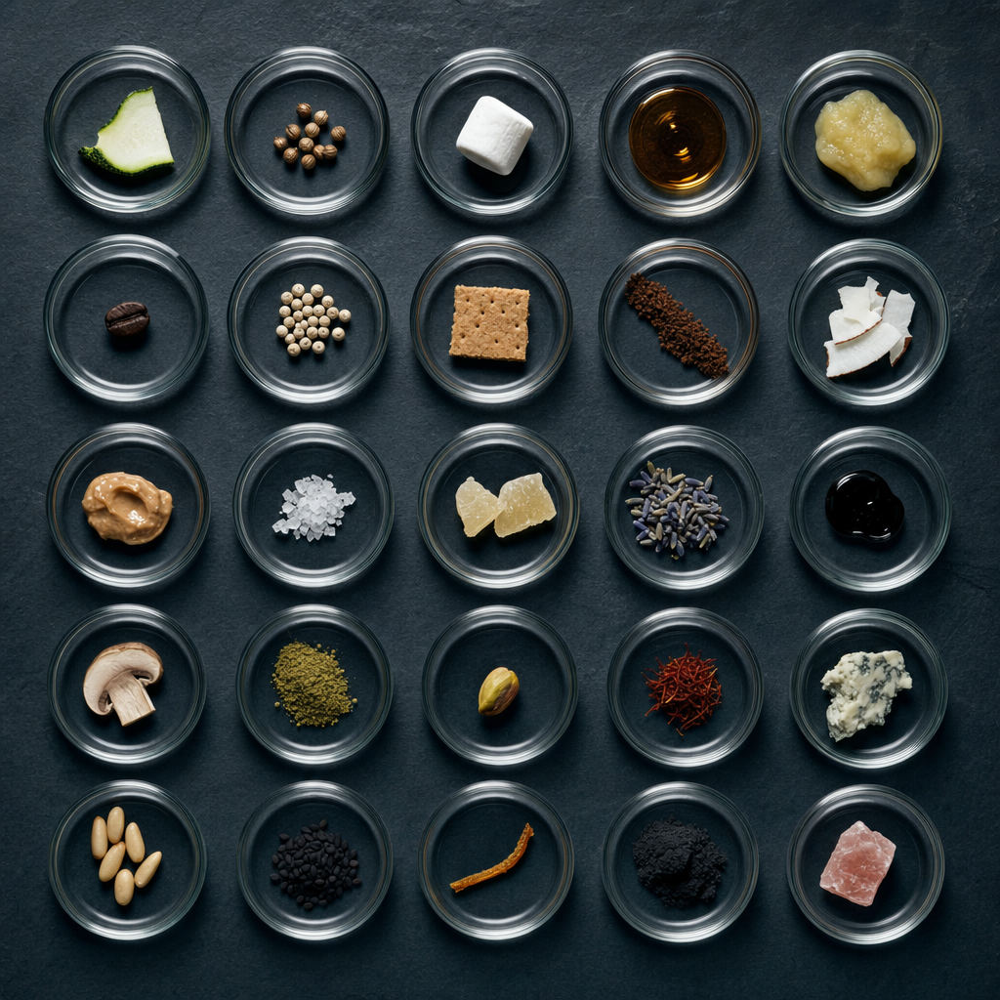
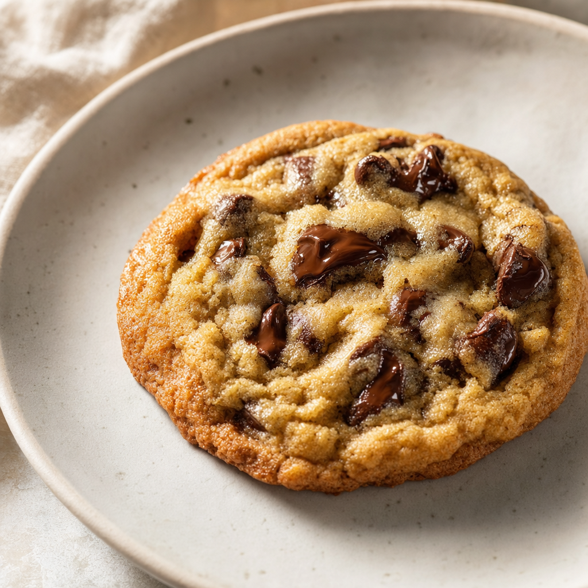
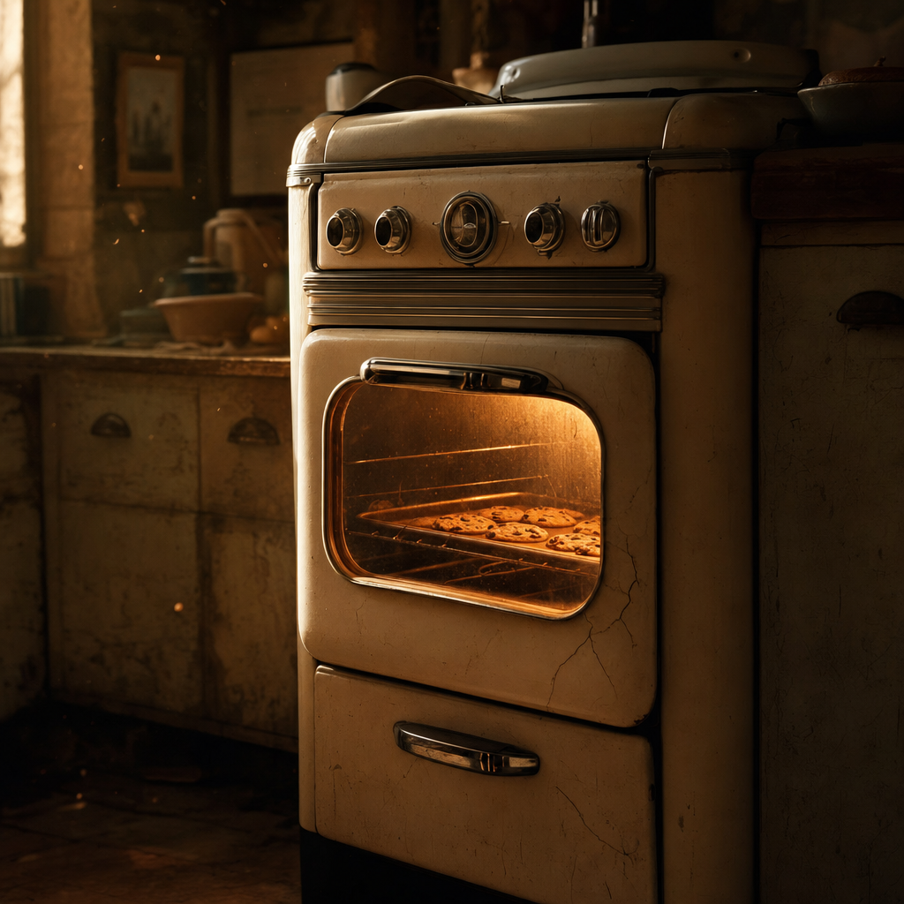

The most-average cookie has bourbon in it
In May 2018, Elle O'Brien and Amber Thomas at The Pudding scraped 209 chocolate chip cookie recipes off the internet, scaled them all to a 48-cookie yield, and computed the strict arithmetic mean of every ingredient. The resulting average cookie contains 68 distinct ingredients. Ten of them appear in substantial quantities. Forty-six are visible. Nineteen are pure trace.
In there, in microscopic but mathematically real amounts, are bourbon (0.019 tablespoons, from a single recipe), zucchini, applesauce, coriander, white pepper, and a thing labeled simply "nestle." 23 distinct ingredients show up in exactly one recipe out of 209, and the average keeps every one of them.

O'Brien actually baked the result. Her verdict: "Chewy and very chocolatey, no one would suspect these cookies were made with everything in your pantry." The average cookie tastes fine. It also has trace marshmallows in it.
But the average cookie is also boringly normal
If you only look at the top of the list, the average cookie is unsurprisingly Toll House. Per 48 cookies: 3.5 cups all-purpose flour, 2.9 eggs, 1.8 cups semisweet chips, 1.4 teaspoons baking soda, 1.2 cups light brown sugar, 1.1 teaspoons salt, 1.1 cups butter, and 1 cup white sugar. Vanilla, three teaspoons of it. That's the cookie Ruth Wakefield invented at her Toll House Inn in 1938, after eight decades of distributed amateur engineering by anonymous home bakers.

Nine ingredients appear in three quarters or more of the 209 recipes — egg (97.6%), vanilla (93.8%), all-purpose flour (92.3%), baking soda (89.5%), white sugar (83.3%), light brown sugar (81.3%), salt (79.9%), butter (76.1%), and semisweet chocolate chip (74.6%). After this group, there's a cliff: the next ingredient, baking powder, appears in only 23.9% of recipes. There is no middle. An ingredient is either canonical or a one-baker quirk.
A close look at the ingredient vector
Lay out all 68 ingredients on a single chart and the shape of the corpus is almost geological. A small cliff face on the left — the universal staples, packed tight at three-quarters or more of recipes. Then nothing. A wide, shallow tail running across the rest of the page: walnuts (18.7%), milk chocolate chips (14.8%), shortening (13.9%), oats (9.1%), bittersweet chips (8.1%) — and then a long fade into one-baker curiosities. 49 of the 68 ingredients show up in fewer than 5% of recipes.
This is the structure that makes "the average" misleading. The arithmetic mean treats each of those rare ingredients as a tiny, real number — not as zero, not as missing, not as an outlier — and rolls them all into the recipe. White pepper, in microscopic doses, becomes part of the cookie.
Where the bakers actually disagree
The standardized form of the cookie hides a wider disagreement underneath. Among the 192 recipes that include all-purpose flour, the median is 3.3 cups (per 48 cookies) but the spread runs from 1.5 cups at the 5th percentile to 8 cups at the 95th. The widest recipe lists 16 cups. The narrowest, 0.32. Flour is the ingredient where bakers seem least sure how much is enough.
Chocolate chips, by contrast, are simpler: 93.8% of recipes use at least one variety, the median is 2.3 cups per 48 cookies, and 74.6% of bakers reach for semisweet specifically. Bittersweet bakers are a small but devoted club: only 17 recipes use bittersweet chips, but when they do, they use 4.4 cups on average — twice as much as the semisweet crowd.
The interesting micro-finding is in the sugars. Among recipes that use both white and brown sugar (152 of 209), 36.8% use more brown sugar than white. Just 15.8% lean the other way. The Nestle Toll House recipe, the canonical one, calls for equal amounts. The internet has voted, by a clear margin, for chewier.
The oven hasn't moved in 80 years
Dump every recipe's directions into one corpus and grep for oven temperatures. 350 degrees Fahrenheit gets 74 mentions. 375 gets 46. Everything else — 325, 300, 385 — combined accounts for fewer than 11. About 60% of all temperature mentions land on 350F, the temperature Wakefield's original Toll House recipe specified in 1938.

The instructional vocabulary is just as canonical. The most common content phrases in 1,110 lines of cookie instructions are "baking soda" (191 mentions), "chocolate chips" (191), "stir in" (166), "preheat oven" (123), and "drop by spoonfuls". This is the shared liturgy of cookie-making.
What averaging is actually for
Beyond the cookie itself, this is a small argument about what we ask "the average" to do. Recommendation algorithms, predictive text, neural networks — they all promise to summarize a population and return a representative output. O'Brien's three experiments tested this on cookies. The mathematical mean produced an edible 68-ingredient Frankenstein. The 4-gram predictive text model fell into an infinite loop the moment it encountered cannelini beans. The character-level neural network output "1.904 cups seconds" and listed white sugar five separate times.
Average is not typical. Average is not preferred. Average is what you get when you let the union of every minority taste have a vote. Sometimes — as with the cookies — the result is fine. Sometimes — as with the neural net — it's nonsense. The cookie experiment is a small, tactile demonstration of a thing that is harder to feel when the topic is news feeds or movie recommendations: the algorithm is summing all of us, including the one person who put zucchini in their cookies, and pretending that's what the population wanted.
References
- Data & original essay: Elle O'Brien & Amber Thomas. "Baking the Most Average Chocolate Chip Cookie." The Pudding, May 2018.
- Companion writeup: Amber Thomas. Baking the Most Average Chocolate Chip Cookie.
- Background: Chocolate chip cookie — Wikipedia (Toll House origin, Ruth Wakefield, 1938).
- Benchmark: Original Nestle Toll House Chocolate Chip Cookies.
- AllRecipes ratings methodology: How AllRecipes ratings work.
- Charts: Vega-Lite v5 (vega-embed CDN). All quantities sourced verbatim from
analyst.jsondata tables; no raw recipe data is fetched at runtime.